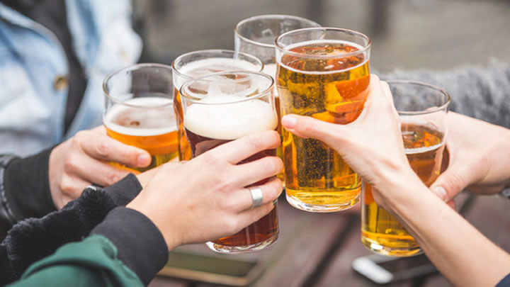

El alcohol es la sustancia con el mayor uso indebido por los jóvenes en los Estados Unidos. Los jóvenes que beben alcohol están en un gran riesgo en cuanto a su salud y su seguridad. Es peligroso porque:
Los niños a menudo comienzan a beber para ser más populares o encajar con sus compañeros. Los padres pueden ayudar a sus hijos a evitar los problemas con el alcohol. Es importante la comunicación abierta y tener conversaciones sobre la bebida. Lo mismo el estar involucrado en la vida de su hijo. Busque ayuda para su hijo si sospecha que tiene un problema con la bebida.
NIH: Centro Nacional de Salud Complementaria e Integral
A continuación puede ver un vídeo relacionado con el tema: